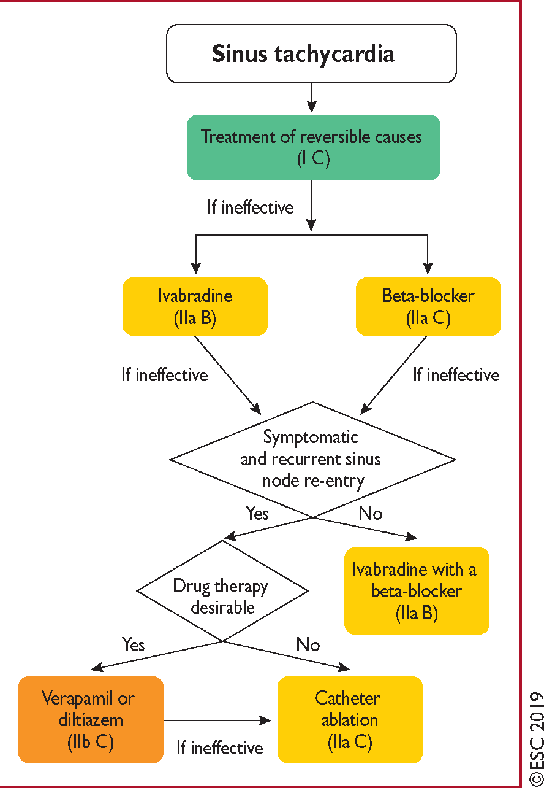
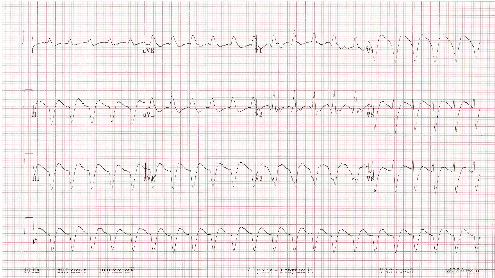

For INAPPROPRIATE SINUS TACHYCARDIA,
consider Ivabradine and/or Beta-blockers and titrate to perfection.

Asymptomatic WPW
• 1/5 will develop arrrhythmias related to accessory pathway.
• Risk of VF occurred in 2 in 1000 person-years.
• Consider EP study in pilots, professional drivers, or competitive athletes (I).
• May consider EP study in other asymptomatic WPW (IIa).
Antegrade ERP of Pathway = 300ms = not high-risk
Electrical Dyssynchrony
esp. from right sided accessory pathways in septum or free wall may cause LV dysfunction.
Catheter ablation should therefore be considered (IIa).
For prevention of SVT in pregnant women,
BB except atenolol or verapamil for prevention of SVT w/o pre-excitation (IIa).
Flecainide or Propafenone for prevention of SVT w/ pre-excitation w/o structural heart disease (IIa).
NO AMIODARONE in preexcited AF.
BB, CCB, and digoxin are not recommended either.

VERAPAMIL
is not recommended in WCT of unknown etiology.
Flecainide/Propafenone
are not recommended for acute treatment of atrial flutter.